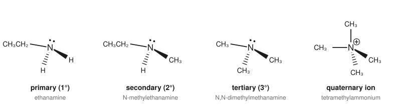
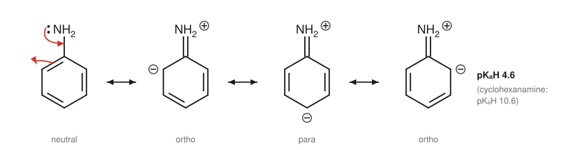

Chapter 13: Amines¶
Organic bases and nitrogen nucleophiles
Amines are organic derivatives of ammonia in which one or more hydrogens have been replaced by carbon groups. They are the main organic bases, and they are everywhere in biology and medicine: amino acids, the bases of DNA, neurotransmitters such as dopamine and serotonin, and a large share of all drugs contain amine nitrogen. The lone pair on nitrogen explains almost everything about amines: it makes them bases, it makes them nucleophiles, and how available it is decides how strongly they do both. This chapter covers the structure, properties and basicity of amines, how they are made, and their main reactions.
Learning outcomes
By the end of this chapter you should be able to:
- classify amines and name simple examples;
- describe the shape of amines and explain why most amines with a nitrogen stereocentre cannot be resolved;
- explain the physical properties of amines in terms of hydrogen bonding;
- compare the basicity of alkylamines, aniline, pyridine and amides using pKa values of conjugate acids, and explain the differences;
- use the basicity of amines to separate them from neutral compounds;
- give methods of making amines, including reduction of nitriles, amides and nitro compounds, and reductive amination;
- predict the products of alkylation and acylation of amines, and describe the formation of diazonium salts and azo dyes.
13.1 Structure and classification¶
Amines are classified by the number of carbon groups bonded to the nitrogen (Section 2.1): primary (RNH₂), secondary (R₂NH) and tertiary (R₃N). A nitrogen with four carbon groups carries a positive charge and is a quaternary ammonium ion, R₄N⁺. Amines in which the nitrogen is part of a ring, such as pyrrolidine and piperidine, are common in natural products; when the ring is aromatic, as in pyridine, the compound is an aromatic heterocycle (Section 8.2). An amine with nitrogen bonded directly to a benzene ring is an arylamine, the simplest being aniline (phenylamine), C₆H₅NH₂.

The nitrogen of an amine is sp³ hybridised. Its three bonds and its lone pair point roughly to the corners of a tetrahedron, so the molecule is trigonal pyramidal, with C–N–C angles close to 108°.
Nitrogen inversion¶
A tertiary amine with three different groups on nitrogen, such as N-ethyl-N-methylpropan-1-amine, has four different "groups" around nitrogen if the lone pair is counted, and it is chiral. Yet such amines cannot be separated into enantiomers. The reason is nitrogen inversion: the pyramid turns inside out like an umbrella in the wind, passing through a planar transition state, with a barrier of only about 25 kJ mol⁻¹. At room temperature this happens many millions of times a second, so the two enantiomers interconvert far too fast to be isolated. Quaternary ammonium ions, which have no lone pair, cannot invert, and those with four different groups can be resolved.
13.2 Physical properties¶
Primary and secondary amines can form hydrogen bonds to one another (N–H···N), but these are weaker than O–H···O hydrogen bonds because nitrogen is less electronegative than oxygen. Amines therefore boil higher than alkanes of similar mass but lower than alcohols. Propan-1-amine boils at 48 °C, between butane (−1 °C) and propan-1-ol (97 °C). Tertiary amines have no N–H bond and boil lower still: trimethylamine boils at about 3 °C.
All amines can accept hydrogen bonds from water through the nitrogen lone pair, so small amines are very soluble in water. Low-molecular-mass amines have sharp, fishy smells; the odour of decaying fish comes partly from trimethylamine, and the aptly named putrescine (butane-1,4-diamine) and cadaverine (pentane-1,5-diamine) are formed when proteins decay.
13.3 Basicity¶
The nitrogen lone pair can take a proton, so amines are bases:
As in Section 4.5, the strength of an amine as a base is expressed by the pKa of its conjugate acid, the ammonium ion (pKaH). The higher the pKaH, the stronger the base.
| Amine | Conjugate acid | pKa of conjugate acid |
|---|---|---|
| ammonia, NH₃ | NH₄⁺ | 9.25 |
| methanamine, CH₃NH₂ | CH₃NH₃⁺ | 10.6 |
| N-methylmethanamine, (CH₃)₂NH | (CH₃)₂NH₂⁺ | 10.7 |
| N,N-dimethylmethanamine, (CH₃)₃N | (CH₃)₃NH⁺ | 9.8 |
| pyridine, C₅H₅N | C₅H₅NH⁺ | 5.2 |
| aniline, C₆H₅NH₂ | C₆H₅NH₃⁺ | 4.6 |
| 4-nitroaniline | O₂NC₆H₄NH₃⁺ | 1.0 |
| ethanamide, CH₃CONH₂ | (protonated on O) | about −0.5 |
Table 13.1. Basicity of amines and related compounds.
Alkylamines¶
Simple alkylamines are slightly stronger bases than ammonia, because alkyl groups donate electron density to the nitrogen and stabilise the positive charge of the ammonium ion. In water, however, tertiary amines are not the strongest: their ammonium ions, R₃NH⁺, have only one N–H to hydrogen bond to water and are less well solvated than R₂NH₂⁺ and RNH₃⁺. The balance between the inductive effect and solvation gives the observed order in water: secondary ≳ primary > tertiary > ammonia.
Arylamines¶
Aniline is about a million times weaker as a base than an alkylamine of similar size (pKaH 4.6 against 10.6 for cyclohexanamine). Its nitrogen lone pair is delocalised into the benzene ring by resonance, so it is less available to take a proton; and protonating it would destroy this stabilising resonance, which costs energy. The nitrogen of aniline is also attached to an sp² carbon, which is more electronegative than an sp³ carbon.

Substituents on the ring change the basicity of arylamines as you would expect. Electron-withdrawing groups, especially those para or ortho to the amino group that can withdraw electrons by resonance (such as –NO₂), weaken the base further: 4-nitroaniline (pKaH 1.0) is about four thousand times weaker than aniline. Electron-donating groups such as –OCH₃ make arylamines slightly more basic.
Other nitrogen compounds¶
In pyridine the lone pair occupies an sp² orbital (33% s character), which holds it closer to the nucleus than an sp³ orbital does, so pyridine is a weaker base than an alkylamine (pKaH 5.2). In pyrrole the lone pair is part of the aromatic sextet, and pyrrole is hardly basic. Amides are not basic at all under ordinary conditions, because the lone pair is delocalised onto the carbonyl oxygen (Section 12.6).
Key idea
The basicity of a nitrogen compound depends on how available its lone pair is. A lone pair that is delocalised (anilines, amides, pyrrole) or held in an orbital with more s character (pyridine, nitriles) is less basic. Alkyl groups make the lone pair slightly more available.
Ammonium salts and extraction¶
Amines react with acids to give ammonium salts: CH₃NH₂ + HCl → CH₃NH₃⁺Cl⁻. These are ionic, crystalline, odourless and much more soluble in water than the free amines. Many amine drugs are sold as their hydrochloride salts for this reason. Adding a strong base (NaOH) to an ammonium salt releases the free amine.
The same chemistry allows an amine to be separated from neutral compounds by acid–base extraction: shaking an ether solution of the mixture with dilute hydrochloric acid moves the amine into the aqueous layer as its salt; making that layer basic with sodium hydroxide releases the amine, which can then be extracted back into fresh ether. Combined with the extraction of acids by sodium hydrogencarbonate (Section 4.6), this lets acids, bases and neutral compounds be separated from one mixture.
13.4 Making amines¶
Alkylation of ammonia and amines¶
Ammonia and amines are nucleophiles and react with haloalkanes by SN2. The difficulty is that the product amine is also a nucleophile, often a better one than the starting material, so it reacts further:
A mixture of products results. A large excess of ammonia favours the primary amine, and an excess of haloalkane drives the reaction to the quaternary ammonium salt, but direct alkylation is rarely a clean way of making primary or secondary amines.
Reduction methods¶
Cleaner methods make the C–N bond first in a compound that cannot over-react, and then reduce it:
- Nitriles (from haloalkanes and cyanide) are reduced by LiAlH₄ or by H₂ and a catalyst to primary amines, RCH₂NH₂, with one more carbon than the haloalkane (Section 12.7).
- Amides (from acyl chlorides and amines) are reduced by LiAlH₄ to amines of any class: RCONHR′ → RCH₂NHR′ (Section 12.6).
- Nitro compounds, especially nitroarenes from the nitration of benzene (Section 8.4), are reduced to primary amines with tin (or iron) and hydrochloric acid, followed by base, or by catalytic hydrogenation. This is the standard route to aniline and its derivatives: C₆H₅NO₂ → C₆H₅NH₂.
Reductive amination¶
An aldehyde or ketone reacts with ammonia or an amine to give an imine (Section 11.5), which can be reduced to an amine in the same pot by hydrogen and a catalyst or by a selective hydride reagent (such as sodium cyanotrihydridoborate, NaBH₃CN, which reduces the imine faster than the carbonyl compound). Propanone and ammonia give propan-2-amine; propanone and methanamine give N-methylpropan-2-amine. Reductive amination is one of the most widely used ways of making amines, in the laboratory and in living cells, where amino acids are made from keto acids in a related way.
Example 13.1: Choosing a route to an amine
Suggest a synthesis of (a) pentan-1-amine from 1-bromobutane; (b) N-ethylcyclohexanamine from cyclohexanone.
(a) The amine has one more carbon than the bromide, so go through the nitrile: CH₃CH₂CH₂CH₂Br + NaCN (SN2) → CH₃CH₂CH₂CH₂CN; then LiAlH₄, then water → CH₃CH₂CH₂CH₂CH₂NH₂.
(b) Reductive amination: cyclohexanone + ethanamine forms the imine, which is reduced (H₂ with a nickel catalyst, or NaBH₃CN) to C₆H₁₁NHCH₂CH₃.
13.5 Reactions of amines¶
Acylation: making amides¶
Primary and secondary amines react rapidly with acyl chlorides and acid anhydrides to give amides (Section 12.4). A second equivalent of the amine, or another base such as pyridine, takes up the acid produced:
The product amide is not nucleophilic (its lone pair is delocalised), so, unlike alkylation, acylation stops cleanly after one step. Tertiary amines have no N–H and cannot form stable amides.
Acylation is also used to moderate the reactivity of aniline in electrophilic aromatic substitution (Section 8.5). The amide group –NHCOCH₃ is a milder activator than –NH₂, so ethanoylating the nitrogen first allows a single, controlled substitution on the ring. Hydrolysis of the amide afterwards gives back the amino group. Paracetamol is itself an amide of this kind, N-(4-hydroxyphenyl)ethanamide.
Amines as bases in elimination¶
Bulky tertiary amines are useful non-nucleophilic bases. When a quaternary ammonium hydroxide is heated, it undergoes an E2 elimination (the Hofmann elimination), and because the leaving group, a neutral amine, is large, the less substituted alkene (the Hofmann product of Section 9.4) is formed.
Diazonium salts and azo dyes¶
Primary arylamines react with nitrous acid, HNO₂ (made in the reaction mixture from sodium nitrite and dilute hydrochloric acid), at 0 to 5 °C to give arenediazonium salts, Ar–N₂⁺ Cl⁻. For example, aniline gives benzenediazonium chloride.
Arenediazonium ions are reactive but, at low temperature in solution, stable enough to be used straight away. Their nitrogen leaves readily as N₂ gas, an exceptionally good leaving group, so the N₂⁺ group can be replaced by many other groups (OH on warming with water, Cl, Br or CN with copper(I) salts, I with potassium iodide), giving access to substituted benzenes that cannot be made by direct electrophilic substitution.
Diazonium ions are also weak electrophiles. They attack strongly activated aromatic rings, such as phenoxide ions and arylamines, usually at the para position, in an electrophilic substitution called azo coupling. The products contain an –N=N– (azo) group linking two aromatic rings. The extended conjugated system absorbs visible light, so azo compounds are intensely coloured. They are an important class of synthetic dyes, and some are acid–base indicators: methyl orange is an azo dye.
Caution: diazonium salts
Diazonium salts are made only in cold solution and used immediately. In the dry, solid state many are shock-sensitive and can decompose violently. They are never isolated or stored in teaching laboratories.
Amines in biology and medicine¶
Many important biological molecules are amines. Adrenaline (epinephrine), dopamine and serotonin are neurotransmitters; histamine is involved in allergic responses; the amino acids that make up proteins all contain amino groups (Chapter 15). Plant alkaloids, nitrogen-containing bases such as caffeine, nicotine, quinine and morphine, have strong effects on the body, and many medicines are based on their structures. Because most of these molecules are bases, their charge, and therefore their solubility and ability to cross cell membranes, depends on pH, a central consideration in the design of drugs.
13.6 Summary¶
Summary
- Amines are primary, secondary or tertiary according to the number of carbon groups on N; R₄N⁺ is a quaternary ammonium ion.
- Amines are pyramidal and invert rapidly at nitrogen, so chiral amines cannot usually be resolved.
- N–H···N hydrogen bonds are weaker than O–H···O, so amines boil lower than alcohols; small amines are water-soluble.
- Alkylamines are moderately strong bases (pKaH about 10 to 11). Aniline (4.6), pyridine (5.2) and especially amides are much weaker, because their lone pairs are delocalised or in orbitals with more s character.
- Amines form water-soluble ammonium salts with acids, used in extraction and in formulating drugs.
- Amines are made by reducing nitriles, amides and nitro compounds and by reductive amination; direct alkylation gives mixtures.
- Amines are acylated to amides cleanly. Primary arylamines give diazonium salts with nitrous acid at 0 to 5 °C, which couple with phenols and arylamines to give azo dyes.
13.7 Exercises¶
Exercise 1
Classify each as a primary, secondary or tertiary amine or a quaternary ammonium salt, and name it: (a) CH₃CH₂CH₂NH₂; (b) (CH₃CH₂)₂NH; (c) (CH₃)₃CNH₂; (d) (CH₃)₄N⁺ I⁻; (e) C₆H₅N(CH₃)₂.
Answer
(a) Primary: propan-1-amine. (b) Secondary: N-ethylethanamine (diethylamine). (c) Primary (one carbon group on N, even though that carbon is tertiary): 2-methylpropan-2-amine. (d) Quaternary ammonium salt: tetramethylammonium iodide. (e) Tertiary: N,N-dimethylaniline.
Exercise 2
Explain why ethanamine (bp 17 °C) boils higher than propane (bp −42 °C) but lower than ethanol (bp 78 °C).
Answer
Ethanamine molecules form N–H···N hydrogen bonds, which propane cannot form; propane has only dispersion forces. Nitrogen is less electronegative than oxygen, so the N–H bond is less polar and N–H···N hydrogen bonds are weaker than the O–H···O hydrogen bonds of ethanol. So ethanamine lies between the two.
Exercise 3
Arrange in order of increasing basicity and explain: aniline, ethanamide, cyclohexanamine, 4-nitroaniline, ammonia.
Answer
Ethanamide (about −0.5) < 4-nitroaniline (1.0) < aniline (4.6) < ammonia (9.25) < cyclohexanamine (10.6). The amide lone pair is delocalised onto the carbonyl oxygen. In aniline it is delocalised into the ring, and in 4-nitroaniline further still onto the nitro group. Ammonia's lone pair is localised. Cyclohexanamine has a localised lone pair and an electron-donating alkyl group.
Exercise 4
A mixture of benzoic acid, aniline and naphthalene is dissolved in ethoxyethane. Describe how to separate all three by extraction.
Answer
(1) Shake with aqueous NaHCO₃: benzoic acid is converted into sodium benzoate and moves into the aqueous layer. Separate; acidify the aqueous layer to recover benzoic acid. (2) Shake the ether layer with dilute HCl: aniline is protonated to anilinium chloride and moves into the aqueous layer. Separate; make this aqueous layer basic with NaOH to release aniline, and extract it into fresh ether. (3) Naphthalene, a neutral compound, remains in the original ether layer; evaporate the solvent to recover it.
Exercise 5
Why does reaction of ammonia with bromoethane give a mixture of products, while reaction of ammonia with ethanoyl chloride gives only ethanamide?
Answer
Ethanamine, the first product of alkylation, is itself a nucleophile, slightly stronger than ammonia, so it competes for the bromoethane and is alkylated further to diethylamine, triethylamine and the tetraethylammonium salt. Ethanamide, the product of acylation, has its nitrogen lone pair delocalised onto the carbonyl oxygen, so it is not nucleophilic and does not react further.
Exercise 6
Give a synthesis of 4-methylaniline from methylbenzene, and of N-propylaniline from aniline without using alkylation.
Answer
4-Methylaniline: nitrate methylbenzene (conc. HNO₃, conc. H₂SO₄, controlled temperature), separate the para isomer from the ortho, then reduce the nitro group with tin and HCl (then NaOH) or H₂ and a catalyst.
N-Propylaniline: acylate aniline with propanoyl chloride to give N-phenylpropanamide, then reduce the amide with LiAlH₄. (Reductive amination of propanal with aniline is an alternative.)
Exercise 7
What is formed when aniline is treated with NaNO₂ and dilute HCl at 0 to 5 °C, and the product is then added to an alkaline solution of phenol? Why must the first step be kept cold?
Answer
The first step gives benzenediazonium chloride. In alkaline solution phenol is present as phenoxide, a strongly activated ring; the diazonium ion attacks it at the para position (azo coupling), giving 4-(phenyldiazenyl)phenol, an orange-yellow azo dye. The diazonium salt must be kept cold because it decomposes on warming, losing N₂ (and in water forming phenol); solid diazonium salts can decompose explosively.
13.8 Quiz¶
Check your understanding of amines
Exercise 1
(CH₃)₂NH is a
- primary amine
- secondary amine
- tertiary amine
- quaternary ammonium ion
Answer
secondary amine
Exercise 2
Which is the strongest base?
- aniline
- ethanamide
- methanamine
- pyridine
Answer
methanamine
Exercise 3
Aniline is a weaker base than cyclohexanamine because
- its nitrogen is sp3
- its lone pair is delocalised into the ring
- it cannot form hydrogen bonds
- it has a larger molar mass
Answer
its lone pair is delocalised into the ring
Exercise 4
Chiral tertiary amines usually cannot be resolved because of
- hydrogen bonding
- nitrogen inversion
- resonance
- tautomerism
Answer
nitrogen inversion
Exercise 5
Which reaction converts nitrobenzene into aniline?
- Sn and HCl, then NaOH
- NaBH₄
- conc. H₂SO₄
- Br₂ and FeBr₃
Answer
Sn and HCl, then NaOH
Exercise 6
Reductive amination of propanone with ammonia gives
- propan-1-amine
- propan-2-amine
- propanamide
- propanenitrile
Answer
propan-2-amine
Exercise 7
What functional group links the two rings of an azo dye?
Answer
-N=N- / N=N / azo / azo group